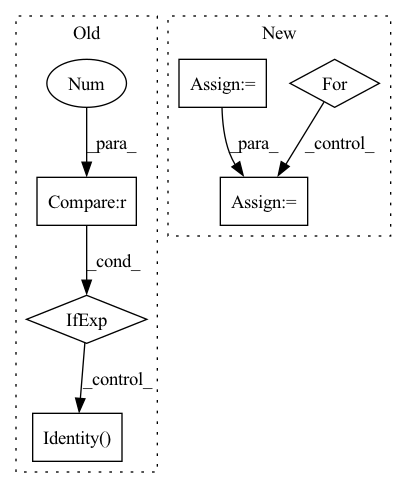

Pattern ID :235
Before Change
nn.Dropout(p=dropout_rate)
]
n_in = n_out
self.conv = nn.Sequential(*conv) if len(conv) > 0 else nn.Identity()
def forward(self, x): // (B, N, n_in)
B, N, _ = x.shapeAfter Change
n = n_in
n += n_in_base*mix_base
l = []
for m in layers:
l += [
nn.Conv1d(n, m, context, padding=context//2),
nn.GroupNorm(1, m),
nn.ELU(), In pattern: SUPERPATTERN
Frequency: 3
Non-data size: 6
Instances Fragment ID: 1066903
Project Name: keio-bioinformatics/mxfold2
Commit Name: 68ef608a1f3045fae21ae3f7f0d12858b14bacbf
Time: 2019-12-01
Author: satoken@bio.keio.ac.jp
File Name: dnnfold/fold/layers.py
M Class Name: CNNUnpairedLayer
N Class Name: CNNUnpairedLayer
M Method Name: __init__(8)
N Method Name: __init__(5)
M Parent Class: nn.Module
N Parent Class: nn.Module
M File Name: dnnfold/fold/layers.py
N File Name: dnnfold/fold/layers.py
M Start Line: 123
M End Line: 132
N Start Line: 349
N End Line: 368
Before Change
nn.Dropout(p=dropout_rate)
]
n_in = n_out
self.conv = nn.Sequential(*conv) if len(conv) > 0 else nn.Identity()
def forward(self, x): // (B, N, n_in)
B, N, _ = x.shapeAfter Change
if len(layers)>0 and layers[0]==0:
layers = ()
n = n_in
n += n_in_base*mix_base
l = []
for m in layers:
l += [
nn.Conv1d(n, m, context, padding=context//2),
nn.GroupNorm(1, m),
nn.ELU(), Fragment ID: 1066904
Project Name: keio-bioinformatics/mxfold2
Commit Name: 68ef608a1f3045fae21ae3f7f0d12858b14bacbf
Time: 2019-12-01
Author: satoken@bio.keio.ac.jp
File Name: dnnfold/fold/layers.py
M Class Name: CNNUnpairedLayer
N Class Name: CNNUnpairedLayer
M Method Name: __init__(8)
N Method Name: __init__(5)
M Parent Class: nn.Module
N Parent Class: nn.Module
M File Name: dnnfold/fold/layers.py
N File Name: dnnfold/fold/layers.py
M Start Line: 123
M End Line: 132
N Start Line: 349
N End Line: 368
Before Change
self.norm = norm_layer(self.num_features)
self.avgpool = nn.AdaptiveAvgPool1d(1)
self.head = nn.Linear(self.num_features, num_classes) if num_classes > 0 else nn.Identity()
self.apply(self._init_weights)
def _init_weights(self, m):After Change
use_checkpoint=use_checkpoint)
self.layers.append(layer)
num_features = [int(embed_dim * 2 ** i) for i in range(self.num_layers)]
self.num_features = num_features
// add a norm layer for each output
for i_layer in out_indices:
layer = norm_layer(num_features[i_layer])
layer_name = f"norm{i_layer}"
self.add_module(layer_name, layer)
Fragment ID: 1066911
Project Name: plemeri/inspyrenet
Commit Name: 12b05eaf235665fc6d1f89a9055b84d7cdfec923
Time: 2021-10-14
Author: taehoon1018@postech.ac.kr
File Name: lib/backbones/SwinTransformer.py
M Class Name: SwinTransformer
N Class Name: SwinTransformer
M Method Name: __init__(20)
N Method Name: __init__(19)
M Parent Class: nn.Module
N Parent Class: nn.Module
M File Name: lib/backbones/SwinTransformer.py
N File Name: lib/backbones/SwinTransformer.py
M Start Line: 483
M End Line: 539
N Start Line: 489
N End Line: 549